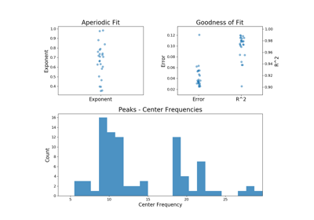

fooof.data.FOOOFResults¶
-
class
fooof.data.FOOOFResults(aperiodic_params, peak_params, r_squared, error, gaussian_params)[source]¶ Model results from parameterizing a power spectrum.
- Parameters
- aperiodic_params1d array
Parameters that define the aperiodic fit. As [Offset, (Knee), Exponent]. The knee parameter is only included if aperiodic is fit with knee.
- peak_params2d array
Fitted parameter values for the peaks. Each row is a peak, as [CF, PW, BW].
- r_squaredfloat
R-squared of the fit between the full model fit and the input data.
- errorfloat
Error of the full model fit.
- gaussian_params2d array
Parameters that define the gaussian fit(s). Each row is a gaussian, as [mean, height, standard deviation].
Notes
This object is a data object, based on a NamedTuple, with immutable data attributes.
Examples using fooof.data.FOOOFResults¶
